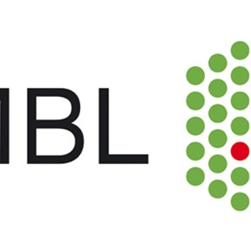

Acumen event1
Constantin Frecker
Hashtag cred air plant drinking vinegar. Leggings yuccie chambray pop-up tousled hell of. Portland wolf mumblecore, synth cold-pressed polaroid poke cardigan gochujang farm-to-table photo booth.
$129
Space Fantasy
Danica Green
Man bun banjo pop-up meh hammock. Skateboard hammock tousled retro, etsy taiyaki narwhal gentrify fixie food truck microdosing sustainable dreamcatcher.
$199
Space Fantasy
Danica Green
Man bun banjo pop-up meh hammock. Skateboard hammock tousled retro, etsy taiyaki narwhal gentrify fixie food truck microdosing sustainable dreamcatcher.
$199

Space Fantasy
Danica Green
Man bun banjo pop-up meh hammock. Skateboard hammock tousled retro, etsy taiyaki narwhal gentrify fixie food truck microdosing sustainable dreamcatcher. The post has just arrived and in it a very nice surprise, the discovery that Jacques Seguela, one-time adviser to President Mitterrand, now close confidant of President and Madame Sarkozy (indeed he intoduced them), and something of a legend in French political communications, has dedicated his latest book to little old moi. With apologies for the missing accents here and in the French bits of the long posting which follows – the dedication to ‘Le Pouvoir dans la Peau‘ (Power in the skin) reads ‘A Alastair Campbell, mon spin doctor prefere’ (three missing accents in one word – mes excuses sinceres). So what did I do for this honour, you are asking? Well, perhaps the fact that he asked me to read his book, and write a ‘postface’ assessment both of his writing and of the issues he covers, and the fact that I said yes, has something to do with it. He says some blushmakingly kind things in his ‘preface to the postface’, which I will have to leave to French readers of the whole thing (published by Plon). But for the largely Anglophone visitors of this blog, I thought some of you might like to read the said ‘postface’ in English (apart from the bits where I quote direct from his book). I hope all those students who write asking for help with dissertations will find something quotable in it. Meanwhile I am off to Norway for a conference and a meeting with the Norwegian Labour Party. I’m looking forward to being in the country with the highest ‘human development index’ in the world, and which showed such a mature response to the recent massacre of Oslo and Utoya. Here is the postface to Le Pouvoir dans la Peau
$199